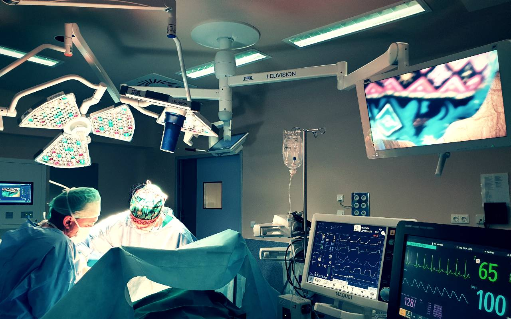

¿Quienes somos?
Somos un Hospital comprometido con la sociedad Alteña en ofrecer la mejor atención médica, basándonos en la máxima calidad asistencial y la mejor accesibilidad. Contamos con profesionales altamente capacitados, equipo médico y tecnología de vanguardia, además de la alta calidad en nuestros servicios y la calidez y amabilidad de nuestro personal. El propio edificio y las instalaciones están diseñadas para facilitar el flujo inteligente y el bienestar de las personas, con la cual hacemos la diferencia. El objetivo principal es que nuestros pacientes obtengan la mayor experiencia posible, ofreciendo en cada momento la mejor respuesta a su demanda de salud.

MISIÓN
Brindar servicios de Salud a los usuarios de manera eficiente y oportuna con altos estándares de calidad, seguridad, respeto y tecnología, ofreciendo atención humanizada en forma integral, contribuyendo para mejorar la salud y el bienestar de los pacientes.
VISIÓN
Ser un referente nacional por su calidad, organización, resultados y cultura en el sector salud, brindando atención integral y oportuna de manera global, estando a la vanguardia en tecnología e innovación de los sistemas de salud.
FILOSOFÍA
Estamos comprometidos con la calidad en el servicio, brindando la mejor atención, con calidez, respeto y empatía. Ser innovadores en tecnología actualizada. Tener comunicación abierta para lograr el éxito. Tomar las mejores decisiones analizadas y estudiadas para brindar el mejor servicio integral.